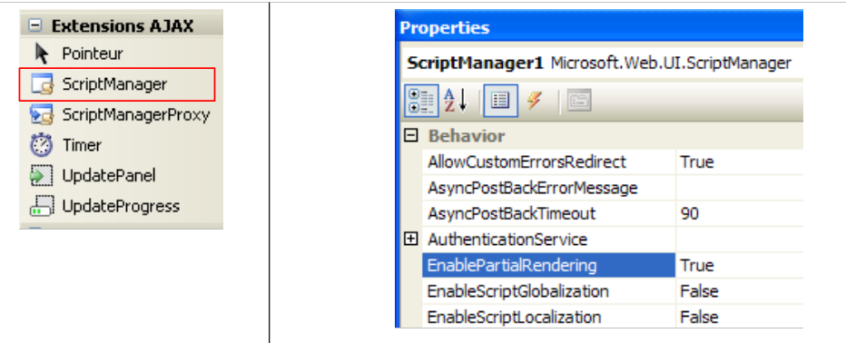
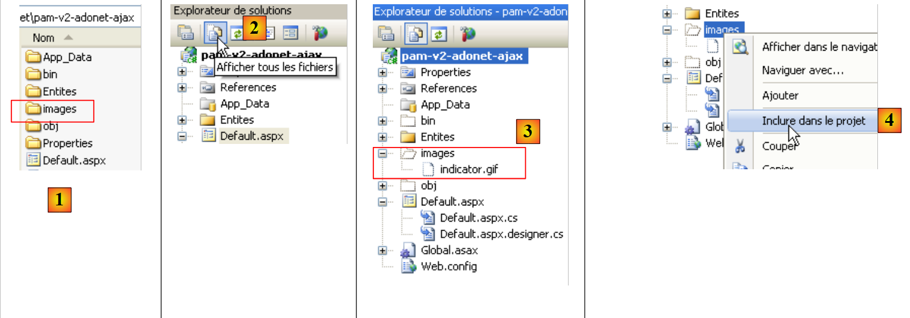
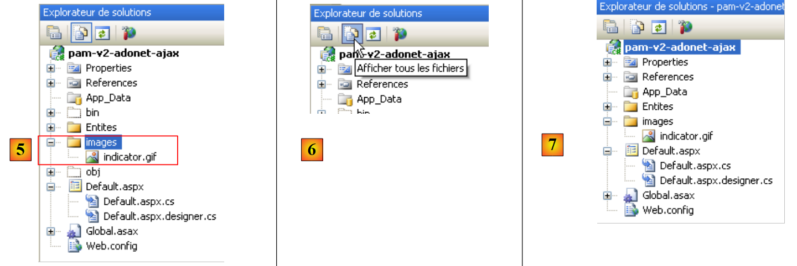

5. L'application [SimuPaie] – version 2 – AJAX / ASP.NET
5.1. Introduction
La technologie AJAX (Asynchronous Javascript And Xml) réunit un ensemble de technologies :
- Javascript : une page HTML affichée dans un navigateur peut embarquer du code Javascript. Ce code est exécuté par le navigateur si l'utilisateur n'a pas inhibé l'exécution du code Javascript sur son navigateur. Cette technologie est apparue dès les débuts du web et suscite depuis 2005 un regain d'intérêt grâce à AJAX.
- DOM : Document Object Model. Le code Javascript embarqué dans une page HTML a accès au document sous la forme d'un arbre d'objets, le DOM. Chaque élément du document (un champ de saisie, une balise <div> nommée, une balise <select>,... est représenté par un noeud de l'arbre. Le code Javascript peut changer le document affiché en modifiant le DOM. Par exemple, il peut changer le texte affiché dans un champ de saisie via le noeud du DOM représentant ce champ.
AJAX utilise Javascript pour faire des échanges navigateur / serveur en tâche de fond. Pour réagir à un événement tel que le clic sur un bouton, du code Javascript va être exécuté par le navigateur pour envoyer une requête HTTP au serveur. Cette requête va contenir des paramètres indiquant au serveur ce qu'il doit faire. Celui-ci va exécuter l'action demandée. Il va envoyer en réponse au navigateur, un flux HTTP contenant des données permettant une mise à jour partielle de la page actuellement affichée. Celle-ci sera réalisée via le DOM du document et l'exécution de code Javascript embarqué dans le document. Les données renvoyées par le serveur peut l'être sous différents formats : XML, HTML, JSON, texte non formaté, ...
L'intérêt de la technologie réside dans cette mise à jour partielle du document affiché. Cela signifie :
- moins de données échangées entre le client et le serveur et donc une réponse plus rapide
- une interface graphique plus fluide à utiliser car les actions de l'utilisateur ne provoquent pas le rechargement complet de la page.
Dans un intranet où les échanges réseau sont rapides, AJAX permet de créer des applications web ayant un comportement qui se rapproche de celui des interfaces windows classiques. On peut en effet gérer des événements tels que le changement de sélection dans une liste et rafraîchir immédiatement et partiellement la page pour refléter ce changement de sélection. Le fait que la page ne soit pas totalement rechargée donne à l'utilisateur l'impression de fluidité qu'il a avec les applications windows. Pour des applications Internet, où les temps de réponse peuvent être longs, la technologie AJAX reste utilisable mais l'impression de fluidité est dépendante de celle du réseau.
La principale difficulté dans AJAX est le langage Javascript. Créé dès les débuts du web,
- il s'avère peu pratique pour faire de la programmation orientée objet. Ce n'est pas, par exemple, un langage typé. On n'y déclare pas le type des données manipulées. On se rapproche là de langages tels que Perl ou PHP.
- il n'a pas un standard accepté par tous les navigateurs. Chacun d'eux a ses extensions "Javascript" propriétaires qui font qu'un code Javascript écrit pour IE pourra ne pas fonctionner dans Mozilla Firefox et vice-versa.
- il est difficile à déboguer, les navigateurs n'offrant pas d'outils performants de débogage du code Javascript qu'ils exécutent.
Tous ces maux du Javascript ont fait qu'il était peu utilisé avant l'arrivée d'AJAX. Une fois compris l'intérêt de faire exécuter du code Javascript en tâche de fond, pour faire des requêtes HTTP au serveur web et utiliser la réponse de celui-ci pour faire, grâce au DOM, une mise à jour partielle du document affiché, les équipes de développement se sont mises au travail et ont proposé des frameworks permettant de faire de l'AJAX sans que le développeur ait à écrire du code Javascript. Pour cela, des bibliothèques Javascript qui savent s'adapter au navigateur client ont été écrites. L'insertion de code Javascript dans la page HTML envoyée au navigateur est faite côté serveur, selon des techniques qui diffèrent selon le framework AJAX utilisé. Il existe des frameworks Ajax aussi bien pour Java, .NET, PHP, Ruby, .... AJAX est intégré dans Visual Web Developer 2008.
5.2. Le projet Visual Web Developer de la couche [web-ui-ajax]
La nouvelle version est obtenue par duplication de la version précédente. Seule la page [Default.aspx] va être modifiée.
 |
- en [1] avec l'explorateur windows on duplique le dossier du projet [pam-v1-adonet] et on lui donne le nom [pam-v2-adonet-ajax]. Puis avec Visual Web Developer, on ouvre le projet (Fichier / Ouvrir un projet) de ce nouveau dossier [2]
- en [3], on lui donne un nouveau nom
 |
- dans les propriétés du nouveau projet, on change le nom de l'assembly [4] ainsi que l'espace de noms par défaut [5].
Ceci fait, on remplace dans les fichiers [Default.aspx, Default.aspx.cs, Default.aspx.designer.cs, Global.asax, Global.asax.cs] l'espace de noms [pam_v1] par l'espace de noms [pam_v2] afin d'être cohérent avec l'espace de noms par défaut. Par exemple, [Default.aspx] [6] devient :
<%@ Page Language="C#" AutoEventWireup="true" CodeBehind="Default.aspx.cs" Inherits="pam_v2._Default" %>
...
La page [Default.aspx] va être modifiée de la façon suivante :
 |
- ajout de composants Ajax dans le formulaire [Default.aspx] (cf [2] ci-dessus).
- 2A : le composant <asp:ScriptManager> est nécessaire pour tout projet AJAX
- 2B : le composant <asp:UpdatePanel> sert à délimiter la zone à rafraîchir lors d'un POST de l'utilisateur. Ce composant évite le rechargement total de la page.
- 2C : le composant <asp:UpdateProgress> sert à afficher un texte ou une image pendant la durée de la mise à jour afin d'en avertir l'utilisateur comme montré ci-dessous :
 |
- (suite)
- 2D : un type Label nommé LabelHeureLoad qui va afficher l'heure à laquelle s'exécute le gestionnaire de l'événement Load de la page.
- 2E : un type Label nommé LabelHeureSalaire qui va afficher l'heure à laquelle s'exécute le gestionnaire de l'événement Click sur le bouton [Salaire]. On veut montrer qu'Ajax ne recharge pas toute la page lors du clic sur le bouton [Salaire]. C'est ce que montre la copie d'écran précédente où on peut voir deux heures différentes dans les deux Labels.
L'Ajaxification précédente du formulaire peut se faire directement dans le code source de [Default.aspx] par l'ajout de balises d'extensions Ajax :
...
<body style="text-align: left" bgcolor="#ffccff">
<h3>
Feuille de salaire
<asp:Label ID="LabelHeureLoad" runat="server" BackColor="#C0C000"></asp:Label></h3>
<hr />
<form id="form1" runat="server">
<asp:ScriptManager ID="ScriptManager1" runat="server" EnablePartialRendering="true" />
<asp:UpdatePanel runat="server" ID="UpdatePanelPam" UpdateMode="Conditional">
<ContentTemplate>
<div>
<table>
<tr>
...
<tr>
<td>
<asp:DropDownList ID="ComboBoxEmployes" runat="server">
</asp:DropDownList></td>
<td>
<asp:TextBox ID="TextBoxHeures" runat="server" EnableViewState="False">
</asp:TextBox></td>
<td>
<asp:TextBox ID="TextBoxJours" runat="server" EnableViewState="False">
</asp:TextBox></td>
<td>
<asp:Button ID="ButtonSalaire" runat="server" Text="Salaire" CausesValidation="False" /></td>
<td> <asp:UpdateProgress ID="UpdateProgress1" runat="server">
<ProgressTemplate>
<img src="images/indicator.gif" />
<asp:Label ID="Label5" runat="server" BackColor="#FF8000" EnableViewState="False"
Text="Calcul en cours. Patientez ...."></asp:Label>
</ProgressTemplate>
</asp:UpdateProgress>
<asp:Label ID="LabelHeureSalaire" runat="server" BackColor="#C0C000"></asp:Label></td>
</tr>
<tr>
...
</tr>
</table>
</div>
<br />
....
<table>
<tr>
<td>
Salaire net à payer :
</td>
<td align="center" bgcolor="#C0C000" height="20px">
<asp:Label ID="LabelSN" runat="server" EnableViewState="False"></asp:Label></td>
</tr>
</table>
</asp:Panel>
</ContentTemplate>
</asp:UpdatePanel>
</form>
</body>
</html>
- ligne 8 : tout formulaire Ajaxifié doit inclure la balise <asp:ScriptManager>. C'est cette balise qui permet l'utilisation des nouveaux composants Ajax :
 |
- la balise <asp:ScriptManager> peut être obtenue par double-clic sur le composant [ScriptManager] ci-dessus. Il faut prendre soin de vérifier que cette balise est contenue dans la balise <form> du code source. L'attribut [EnablePartialRendering= "true "] de la ligne 8 est absent pas défaut. La valeur " true " étant sa valeur par défaut, il n'est pas indispensable.
- ligne 9 : la balise <asp:UpdatePanel> permet de délimiter les zones de la page qui doivent être mises à jour, lors d'une mise à jour partielle de la page. L'attribut [UpdateMode="Conditional"] indique que la zone ne doit être mise à jour que sur un événement AJAX d'un composant de la zone. L'autre valeur est [UpdateMode="Always"] et c'est la valeur par défaut. Avec cet attribut, la zone UpdatePanel est mise à jour systématiquement même si l'événement Ajax qui s'est produit provient d'un composant d'une autre zone UpdatePanel. En général, ce comportement n'est pas désirable.
La balise <asp:UpdatePanel> admet deux balises enfant : <ContentTemplate> et <Triggers>.
- les balises <asp:ContentTemplate>, lignes 10 et 53, délimitent la zone de la page à mettre à jour partiellement.
- lignes 27-33 : un composant Ajax <asp:UpdateProgress> permettant d'afficher un texte pendant toute la durée de la mise à jour de la page. Par exemple, le clic sur le bouton [Salaire] va provoquer un POST en arrière-plan. Le navigateur ne met alors pas le sablier et l'utilisateur peut être ainsi tenté de continuer à utiliser le formulaire. La balise <asp:UpdateProgress> permet d'afficher un texte avertissant qu'une mise à jour de la page est en cours. On peut également afficher une image. Ici, on affiche une image animée (ligne 29) ainsi qu'un texte (lignes 30-31) :
 |
- lignes 28-32 : la balise <ProgressTemplate> délimite le contenu qui sera affiché pendant toute la durée de la mise à jour de la zone UpdatePanel dans laquelle se trouve la balise UpdateProgress.
- lignes 29-31 : l'image animée et le texte qui seront affichés pendant la mise à jour de la zone UpdatePanel .
- ligne 5 : le label LabelHeureLoad est mis à l'extérieur de la zone ajaxifiée
- ligne 34 : le label LabelHeureSalaire est mis dans la zone ajaxifiée
Le code de la page [Default.aspx.cs] évolue lui de la façon suivante :
protected void Page_Load(object sender, System.EventArgs e)
{
// heure de chaque chargement de page
LabelHeureLoad.Text = DateTime.Now.ToString("hh:mm:ss");
// traitement requête initiale
if (!IsPostBack)
{
....
}
- ligne 4 : mise à jour de l'heure de chargement de la page
protected void ButtonSalaire_Click(object sender, System.EventArgs e)
{
// heure calcul salaire
LabelHeureSalaire.Text = DateTime.Now.ToString("hh:mm:ss");
// on vérifie les données
....
}
- ligne 4 : mise à jour de l'heure de calcul du salaire
Pour terminer la page [Default.aspx], il nous faut inclure l'image animée référencée par la ligne 4 du code source suivant de la page :
<td>
<asp:UpdateProgress ID="UpdateProgress1" runat="server">
<ProgressTemplate>
<img src="images/indicator.gif" />
<asp:Label ID="Label5" runat="server" BackColor="#FF8000" EnableViewState="False"
Text="Calcul en cours. Patientez ...."></asp:Label>
</ProgressTemplate>
</asp:UpdateProgress>
<asp:Label ID="LabelHeureSalaire" runat="server" BackColor="#C0C000"></asp:Label>
</td>
Avec l'explorateur windows, nous rajoutons le fichier [images/indicator.gif] au dossier du projet [1] :
 |
- en [2], on fait afficher tous les fichiers du projet
- en [3], le dossier [images]
- en [4], on inclut le dossier [images] dans le projet
 |
- en [5], le dossier [images] a été inclus dans le projet
- en [6], on cache les fichiers qui ne font pas partie du projet
- en [7], le nouveau projet
5.3. Tests de la solution Ajax
Lorsqu'on demande l'exécution du projet (CTRL-F5), on obtient la page suivante :
 |
- en [1], l'heure de chargement de la page
Faites des essais et vérifiez que le bouton [Salaire] ne provoque pas le rechargement complet de la page. Vous pouvez le voir avec l'heure affichée pour le traitement du clic sur le bouton [Salaire] [2] qui n'est pas le même que l'heure du chargement initial de la page [3] :
 |
Refaire les tests en mettant la propriété EnablePartialRendering du composant ScriptManager1 à False :
 |
Constater qu'alors on retrouve le comportement d'une page non ajaxifiée. Il y a rechargement total de la page lors du clic sur le bouton [Salaire]. Refaire les tests avec un autre navigateur. Le test multi-navigateurs a pour but de montrer que le javascript généré par les composants serveur ASP / AJAX est correctement interprété par les différents navigateurs.
Pour finir, mettons en lumière le rôle de la balise <asp:UpdateProgress>. Dans le code de la procédure [ButtonSalaire_Click] de [Default.aspx.cs], ajoutons une instruction qui arrête la procédure pendant 3 secondes :
using System.Threading;
...
protected void ButtonSalaire_Click(object sender, System.EventArgs e)
{
// heure calcul salaire
LabelHeureSalaire.Text = DateTime.Now.ToString("hh:mm:ss");
// attente
Thread.Sleep(3000);
// on vérifie les données
....
}
La ligne 8 fait attendre 5 secondes le thread qui exécute la procédure [ButtonSalaire_Click]. Ceci fait, refaisons des tests (après avoir remis l'attribut EnablePartialRendering du composant ScriptManager1 à True). Cette fois, on voit le texte de [UpdateProgress] ainsi que l'image animée pendant le calcul du salaire :

5.4. Conclusion
L'étude précédente nous a montré qu'il était possible d'ajaxifier des applications ASP.NET existantes. Les extensions AJAX d'ASP.NET vont plus loin que ce qui vient d'être vu. Le lecteur est invité à consulter le site [http://ajax.asp.net].